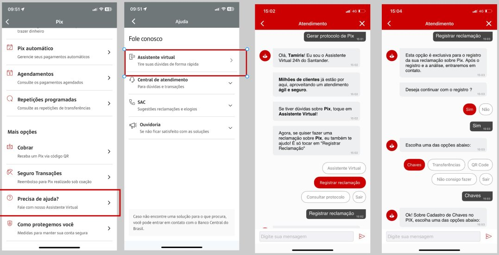
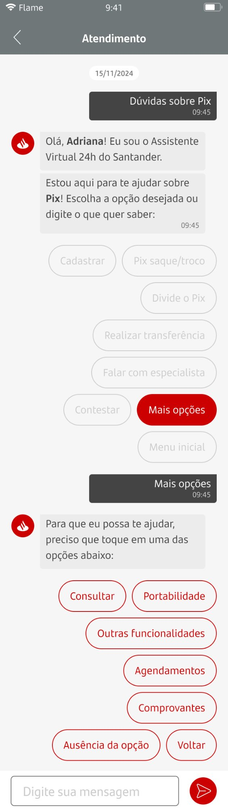
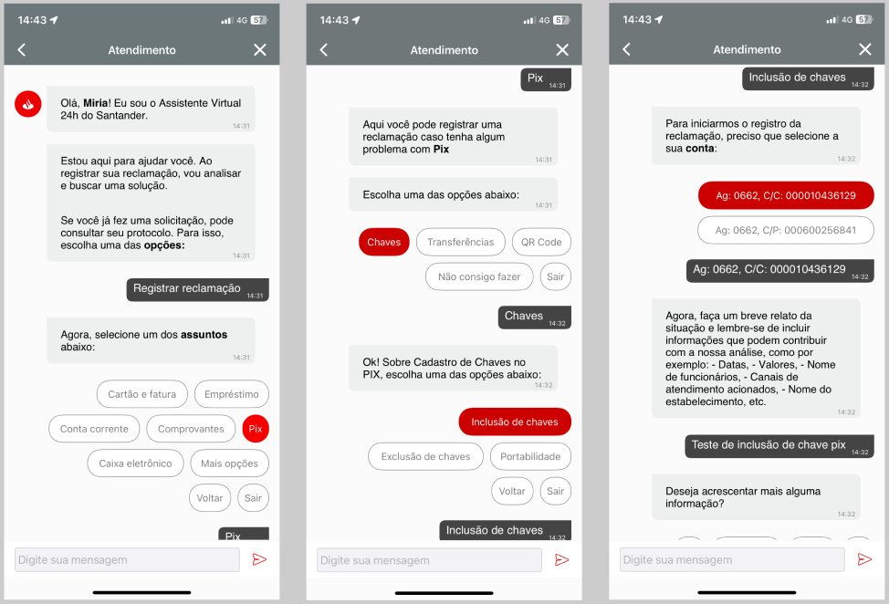
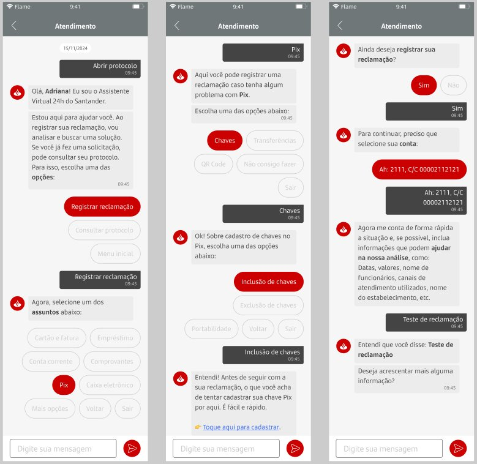

🎯 Contexto e Objetivo
Refinamento de duas jornadas críticas relacionadas ao Pix no chatbot do Santander: "Precisa de Ajuda?" e "Registrar Reclamação Pix". O objetivo era utilizar UX Writing estratégico para reduzir o suporte humano, aumentar a resolução no bot e melhorar a experiência geral do cliente.
Desafio: As jornadas de Pix são extremamente sensíveis pois envolvem dinheiro e urgência do cliente. Era fundamental criar fluxos que transmitissem empatia, clareza e resolutividade, mantendo o cliente no canal conversacional sempre que possível.
Foco principal:
- Fluxos de Transbordo (quando necessário escalar para humano)
- Diagnóstico e Melhoria Contínua
- Redução de fricção na jornada
- Aumento da resolução no primeiro contato (FCR)
📊 Resultados Obtidos
Período de análise: Julho a Outubro
+10 p.p
Aumento no NPS
De 33 para 43
-118
Redução em registros mensais
Reclamações de Pix
64%
FCR
First Contact Resolution
-17 p.p
Redução em transbordo
Menos escalações para humano
✨ Ganhos Qualitativos
Além dos números, alcançamos melhorias significativas na experiência do usuário:
↗ Aumento em Resolutividade
Mais clientes conseguem resolver seus problemas sem sair do chatbot
💙 Tratativa Empática e Proativa
Comunicação mais humanizada em momentos de stress do cliente
📋 Informação Facilitada
Clareza nas orientações sobre o que fazer em cada situação
🎯 Direcionamento Correto
Quando necessário, transbordo qualificado para atendimento humano
🔍 Jornada 1: Precisa de Ajuda? Pix
❌
AS IS (Antes)

Principais problemas identificados:
Linguagem muito técnica ou "bancarês"
Falta de orientação clara sobre próximos passos
Excesso de opções confundindo o cliente
Transbordo prematuro sem tentar resolver no bot
✅
TO BE (Depois)

Melhorias implementadas:
Linguagem clara e acessível
Orientações passo a passo objetivas
Opções simplificadas e priorizadas
Tentativas de resolução no bot antes de transbordar
Tom empático e acolhedor
📝 Jornada 2: Registrar Reclamação Pix
❌
AS IS (Antes)

Pontos de dor identificados:
Processo burocrático e pouco claro
Cliente não sabia o que esperar
Falta de feedback sobre o andamento
Linguagem fria em momento delicado
✅
TO BE (Depois)

Soluções aplicadas:
Processo simplificado e transparente
Expectativas claras sobre prazos
Confirmação e comprovante imediatos
Tom empático reconhecendo a frustração
Informações sobre próximos passos
⚙️ Metodologia de Trabalho
Processo de Melhoria
- Análise da jornada atual: Mapeamento completo do fluxo existente identificando pontos de atrito
- Análise de dados: Revisão de métricas de NPS, transbordo, FCR e reclamações
- Identificação de dores: Compreensão das frustrações do cliente em cada etapa
- Prototipação no Figma: Criação de novos fluxos com microcopy otimizado
- Validação com time de produto: Apresentação e discussão das propostas
- Implementação: Subida para produção pelo time especialista
- Monitoramento: Acompanhamento de métricas pós-implementação
Foco em UX Writing
Cada palavra foi escolhida estrategicamente considerando:
- Clareza: Comunicação direta e sem ambiguidades
- Empatia: Reconhecimento da situação do cliente
- Ação: CTAs claros sobre o que fazer
- Concisão: Informação necessária sem sobrecarga
- Tom de voz: Alinhado com a marca Santander
💡 Principais Aprendizados
O poder das palavras em momentos críticos: Em jornadas sensíveis como Pix, onde o cliente está lidando com dinheiro e muitas vezes frustrado, cada palavra importa. A diferença entre "sua solicitação foi negada" e "estamos trabalhando para resolver sua situação" pode definir a experiência.
- Antecipação resolve: Antecipar dúvidas e fornecer informações proativamente reduz ansiedade e transbordo
- Transparência gera confiança: Explicar prazos e processos claramente aumenta a satisfação mesmo em situações negativas
- Menos é mais: Simplificar opções e focar no essencial melhora decisões e reduz fricção
- Empatia não é opcional: Reconhecer o sentimento do cliente é fundamental em momentos de stress
- Dados guiam, mas UX humaniza: Métricas mostram o problema, mas o UX Writing traz a solução humanizada